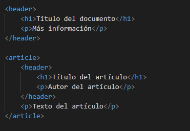
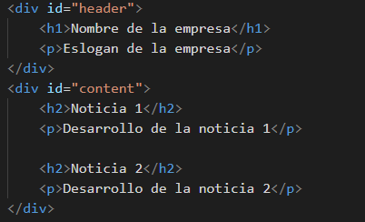
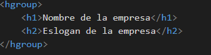
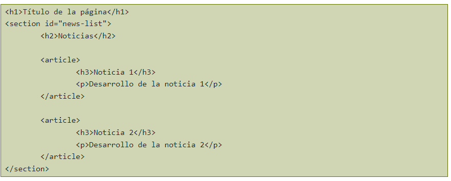

Que son las Etiquetas semanticas:
Con las etiquetas semánticas se describe el significado del contenido y permite que los documentos HTML sean más claros para los desarrolladores y para los navegadores que procesan y renderizan sus informaciones. En la versión 5 del HTML, las principales modificaciones son justo en la estructura semántica, con nuevas tags que representan las secciones, con las divs madres.
Cual es el ultimo estandar para HTML5:
Algunas de las más importantes etiquetas introducidas en HTML5 son las que añaden valor semántico y estructural, es decir, indican de forma inequívoca las distintas partes de las que consta un página: cabecera, pie.HEADER:
Se usa para marcar un grupo de elementos de introducción o de navegación dentro de una
sección o documento. Normalmente se usa para incluir los encabezados (h1–h6 o hgroup) pero no es
obligatorio. También puede contener otras cosas como el índice de una sección, un formulario
de búsqueda, logos relevantes.
El uso de la etiqueta no está restringido a una por documento, sino que se puede
usar una por cada sección del mismo, de esta forma:

HGROUP:
Se usa para agrupar un conjunto de uno o más elementos de encabezado ("h1"–"h6"). El uso más típico de esta etiqueta es para agrupar el título. la página con su eslogan. Antes de HTML5 lo más típico era que este tipo de estructura se marcase así:
Este tipo de estructura dejaba el eslogan al nivel de cualquier otro texto de la web, cuando es evidente que es un texto más importante. Marcarlo con un "h2" no era correcto ya que crea una nueva sección que en realidad no existe. Con HTML5 podemos usar "hgroup" para darle la importancia que realmente tiene, asociándolo al título:
NAV:
La etiqueta "nav" se usa para marcar una sección del documento cuya función es la navegación por la página web.
Esta etiqueta no debe ser usada para marcar todos los grupos de enlaces, únicamente los bloques principales de navegación por la página. Por ejemplo, los típicos enlaces que hay en el pie de página no se deben marcar con NAV
ARTICLE:
La etiqueta "article" se usa para marcar contenido independiente que tendría sentido fuera del contexto de la página actual y que podría sindicarse, por ejemplo: una noticia, un artículo en un blog o un comentario. Normalmente un "article" tendrá, además de su propio contenido, también una cabecera (a menudo con "header" y posiblemente un pie "footer".
SECTION:
La etiqueta "section" se usa para marcar una sección genérica de un documento o aplicación. Una sección, en este contexto, es una agrupación temática del contenido, típicamente con un encabezado. Ejemplos de uso de section podrían ser: capítulos, las pestañas en un menú tabulado o, en la página principal de un sitio web, la introducción, lista de noticias e información de contacto. Sólo se debería usar section para contenido independiente al que se podría poner un encabezado y que no sea susceptible de ir marcado con "article" "aside" o "nav"
CUANDO USAR SECTION O ARTICLE:
Existe cierta confusión sobre cuándo usar "article" y cuándo "section" ya que ambos se parecen bastante. En general, se debe usar "article"
cuando el contenido sea susceptible de ser sindicado (por ejemplo en unas RSS). Un ejemplo de uso de las dos etiquetas podría ser en la página principal
de una web con un listado de noticias, de esta forma:

ASIDE:
La etiqueta "aside" se usa para marcar un trozo de contenido que está relacionado con el contenido de la página web, pero que no es parte del mismo. Ejemplos de uso serían: glosario de términos, grupos de enlaces a páginas relacionadas, barras laterales, ...
FOOTER:
La etiqueta "footer" se usa para marcar el pie de una sección o documento y que contiene información sobre el mismo como el autor, licencia, términos de uso
Fuente: arumeinformatica. (29 de 08 de 2012). Luis Blogger. Obtenido de https://www.arumeinformatica.es/blog/html5-nuevas-etiquetas-semanticas-y-estructurales/